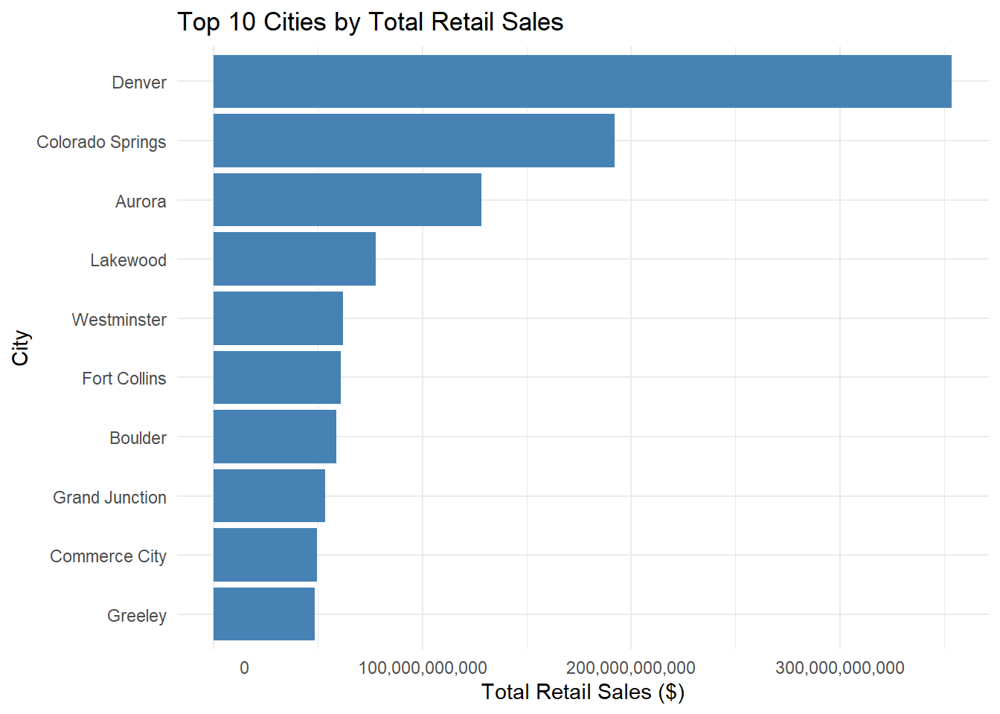
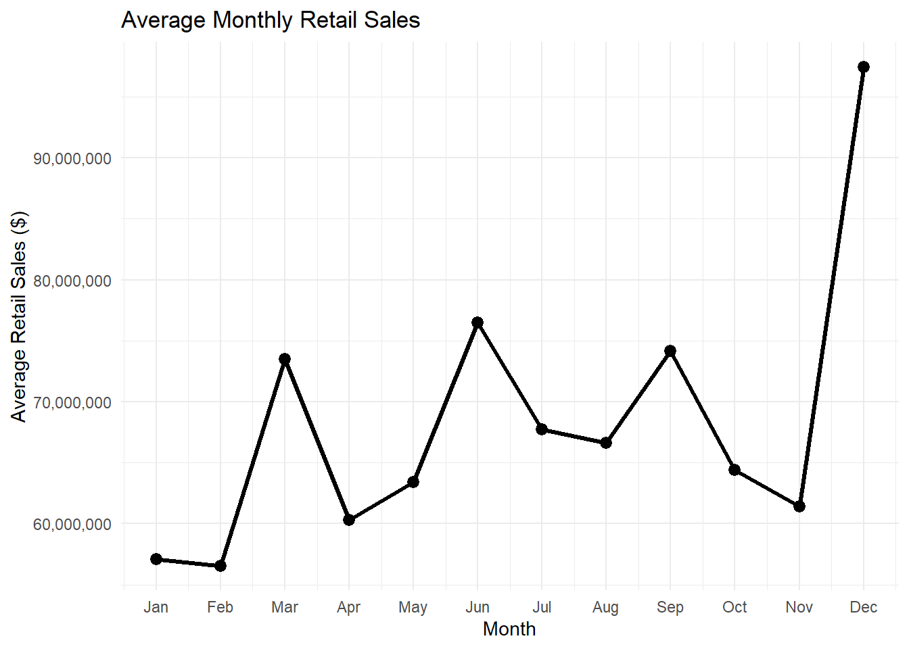
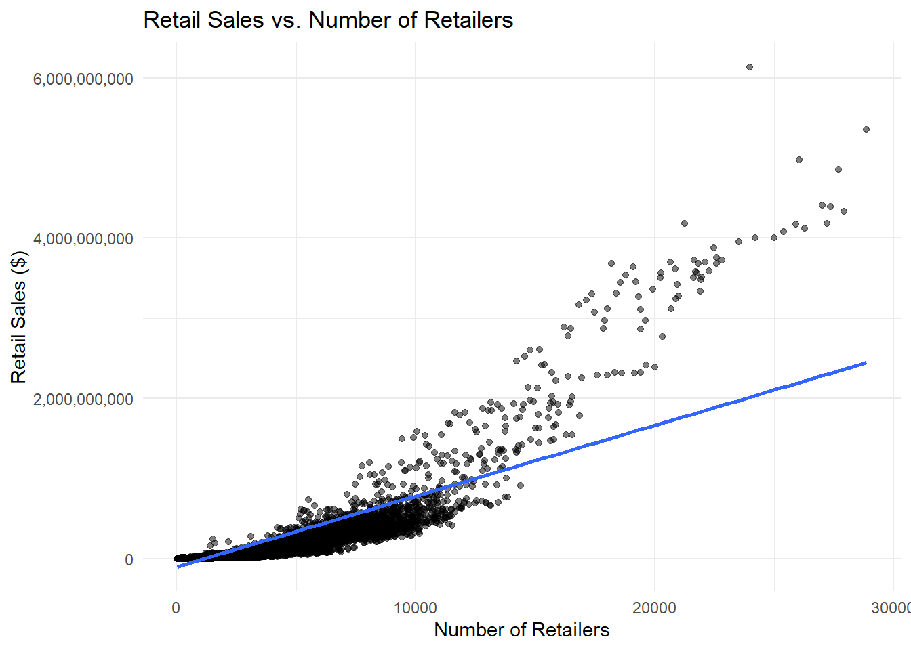

Open Data Network Business Intelligence Report
Data-Driven Management Analysis
Paul Ufen – 668465883
2025-10-30
csv_data <- read.csv("C:/Users/pufen/Desktop/HS EL/V Semester/VIU/Courses/MGMT 230/R/Chapter 4/Retail_Reports_by_City_in_Colorado_20251028.csv")Problem Statement
A German retail company planning to expand into the U.S. market needs to identify which cities in Colorado offer the best potential for opening new stores. Using the Retail Reports by City in Colorado dataset, the company aims to analyze regional sales performance and economic activity to select locations with strong retail demand and balanced competition. This dataset provides comprehensive, city-level insights directly supporting strategic expansion decisions.
Data Source Assessment
a) Data Source Documentation
The dataset “Retail Reports by City in Colorado”(URL: https://data.colorado.gov/Business/Retail-Reports-by-City-in-Colorado/2yhn-3dbj/about_data) is published on the Colorado Information Marketplace and compiled by the Colorado Department of Revenue. It provides monthly summaries of taxable retail sales, gross sales, and retailer counts by city. The data are collected for state revenue tracking and economic planning purposes, ensuring accurate measurement of local economic activity and sales tax performance.
The dataset covers multiple years and is updated monthly, with the most recent update on the 4th October 2025. Its geographic scope includes all incorporated cities in the State of Colorado, representing the entire retail market across urban and suburban areas.
Data reliability is high, as it originates from mandatory tax filings by businesses. A limitation is that it excludes non-taxable transactions and informal economic activity, but overall it provides a robust foundation for business location and retail performance analysis.
b) Access Method Implementation
csv_data <- read.csv("C:/Users/pufen/Desktop/HS EL/V Semester/VIU/Courses/MGMT 230/R/Chapter 4/Retail_Reports_by_City_in_Colorado_20251028.csv")The dataset was accessed through a direct CSV download from the official Colorado Information Marketplace. After downloading the file from the Retail Reports by City in Colorado page, it was saved locally and imported into R using read.csv(). This method ensures full data integrity and offline reproducibility for analysis.
c) Data Quality Assessment
rows <- nrow(csv_data)
cols <- ncol(csv_data)
numeric_vars <- sum(sapply(csv_data, is.numeric))
categorical_vars <- sum(sapply(csv_data, function(x) is.character(x) || is.factor(x)))
overview <- data.frame(
Metric = c("Number of Observations (Rows)",
"Number of Variables (Columns)",
"Numeric Variables",
"Categorical Variables"),
Value = c(rows, cols, numeric_vars, categorical_vars)
)
knitr::kable(
overview,
caption = "Dataset Overview Summary",
align = c("l", "r")
)| Metric | Value |
|---|---|
| Number of Observations (Rows) | 30344 |
| Number of Variables (Columns) | 13 |
| Numeric Variables | 2 |
| Categorical Variables | 11 |
missing_count <- colSums(is.na(csv_data))
missing_pct <- round(missing_count / nrow(csv_data) * 100, 2)
unique_counts <- sapply(csv_data, function(x) length(unique(x)))
quality_summary <- data.frame(
column = names(csv_data),
missing_count = missing_count,
missing_pct = missing_pct,
unique_values = as.integer(unique_counts),
stringsAsFactors = FALSE
)
quality_summary <- quality_summary[order(-quality_summary$missing_pct), ]
knitr::kable(
head(quality_summary, 15),
caption = "Data Quality Summary – Missing & Uniqueness",
digits = 2,
align = c("l","r","r","r")
)| column | missing_count | missing_pct | unique_values | |
|---|---|---|---|---|
| month | month | 0 | 0 | 12 |
| year | year | 0 | 0 | 10 |
| city | city | 0 | 0 | 295 |
| numberOfRetailers | numberOfRetailers | 0 | 0 | 5237 |
| numberOfReturns | numberOfReturns | 0 | 0 | 6050 |
| grossSales | grossSales | 0 | 0 | 25490 |
| grossSalesBlankCode | grossSalesBlankCode | 0 | 0 | 2 |
| retailSales | retailSales | 0 | 0 | 25049 |
| retailSalesBlankCode | retailSalesBlankCode | 0 | 0 | 2 |
| stateNetTaxableSales | stateNetTaxableSales | 0 | 0 | 23475 |
| stateNetTaxableSalesBlankCode | stateNetTaxableSalesBlankCode | 0 | 0 | 2 |
| stateSalesTax | stateSalesTax | 0 | 0 | 2473 |
| stateSalesTaxBlankCode | stateSalesTaxBlankCode | 0 | 0 | 2 |
Data Quality and Reliability Assessment
The dataset is complete, with no missing entries across its numeric and categorical variables, making it highly usable for quantitative analysis. It originates from the Colorado Department of Revenue, a trusted government agency responsible for collecting and publishing official retail sales data for tax and planning purposes. Because of its regulatory nature and regular monthly updates, this dataset can be relied upon for accurate business analysis. It supports strategic decisions for retail expansion, such as identifying high-performing cities or seasonal sales trends across Colorado’s markets.
Comprehensive Data Analysis
a) Descriptive Analytics
num_like <- c("retailSales","grossSales","stateNetTaxableSales",
"stateSalesTax","numberOfRetailers","numberOfReturns")
for (v in intersect(names(csv_data), num_like)) {
# remove commas/$ and coerce to numeric
csv_data[[v]] <- as.numeric(gsub("[,$]", "", csv_data[[v]]))
}
csv_data$city <- trimws(csv_data$city)
options(scipen = 999)
sales_by_city <- aggregate(retailSales ~ city, data = csv_data, sum, na.rm = TRUE)
top_cities <- head(sales_by_city[order(-sales_by_city$retailSales), ], 10)
avg_monthly_sales <- aggregate(retailSales ~ month, data = csv_data, mean, na.rm = TRUE)
top_cities$retailSales <- paste0("$", format(round(top_cities$retailSales, 0), big.mark = ","))
avg_monthly_sales$retailSales <- paste0("$", format(round(avg_monthly_sales$retailSales, 0), big.mark = ","))
knitr::kable(
top_cities,
col.names = c("City", "Total Retail Sales"),
caption = "Top 10 Cities by Total Retail Sales",
align = "lc",
row.names = FALSE
)| City | Total Retail Sales |
|---|---|
| Total | $1,038,897,571,000 |
| Denver | $ 353,699,751,604 |
| Colorado Springs | $ 191,959,718,591 |
| Remainder | $ 148,941,016,000 |
| Aurora | $ 128,448,980,218 |
| Lakewood | $ 77,511,250,524 |
| Westminster | $ 61,976,737,705 |
| Fort Collins | $ 60,732,011,130 |
| Boulder | $ 58,890,980,839 |
| Grand Junction | $ 53,576,169,199 |
knitr::kable(
avg_monthly_sales,
col.names = c("Month", "Average Retail Sales"),
caption = "Average Monthly Retail Sales Across Colorado",
align = "lc"
)| Month | Average Retail Sales |
|---|---|
| 1 | $ 88,271,494 |
| 2 | $ 87,367,874 |
| 3 | $113,418,715 |
| 4 | $ 92,434,635 |
| 5 | $ 97,429,214 |
| 6 | $118,751,246 |
| 7 | $105,039,701 |
| 8 | $108,504,768 |
| 9 | $121,192,064 |
| 10 | $104,198,692 |
| 11 | $ 99,255,621 |
| 12 | $160,380,443 |
The first aggregation calculatedtotal retail sales by city to identify the most economically active locations. Denver and Colorado Springs recorded the highest overall sales, indicating major consumer hubs in Colorado. A second aggregation calculated average monthly retail sales across all cities, revealing seasonal fluctuations in spending. These summaries highlight key geographic and temporal sales patterns, providing a foundation for market entry decisions and targeted retail expansion planning.
Professional Visual Analytics
csv_data$retailSales_num <- as.numeric(gsub("[^0-9.]", "", csv_data$retailSales))
sales_by_city <- aggregate(retailSales_num ~ city, data = csv_data, sum, na.rm = TRUE)
sales_by_city <- subset(sales_by_city, !(city %in% c("Total", "Remainder")))
top_cities <- head(sales_by_city[order(-sales_by_city$retailSales_num), ], 10)
library(ggplot2)
ggplot(top_cities, aes(x = reorder(city, retailSales_num), y = retailSales_num)) +
geom_col(fill = "steelblue") +
coord_flip() +
labs(title = "Top 10 Cities by Total Retail Sales ",
x = "City", y = "Total Retail Sales ($)") +
theme_minimal() +
scale_y_continuous(labels = function(x) format(x, big.mark = ",", scientific = FALSE))
df_month <- subset(csv_data, !(city %in% c("Total", "Remainder")))
m_raw <- df_month$month
m_low <- tolower(trimws(as.character(m_raw)))
to_num <- function(x) {
out <- suppressWarnings(as.integer(x))
out[is.na(out) & m_low %in% tolower(month.name)] <- match(m_low[is.na(out) & m_low %in% tolower(month.name)],
tolower(month.name))
out[is.na(out) & m_low %in% tolower(month.abb)] <- match(m_low[is.na(out) & m_low %in% tolower(month.abb)],
tolower(month.abb))
out
}
df_month$month_num <- to_num(m_raw)
df_month <- df_month[!is.na(df_month$month_num), ]
avg_monthly_sales <- aggregate(retailSales_num ~ month_num, data = df_month, mean, na.rm = TRUE)
library(ggplot2)
ggplot(avg_monthly_sales, aes(x = month_num, y = retailSales_num, group = 1)) +
geom_line(linewidth = 1.1) +
geom_point(size = 2.8) +
scale_x_continuous(breaks = 1:12, labels = month.abb) +
scale_y_continuous(labels = function(x) format(x, big.mark = ",", scientific = FALSE)) +
labs(
title = "Average Monthly Retail Sales",
x = "Month",
y = "Average Retail Sales ($)"
) +
theme_minimal()
df_scatter <- subset(csv_data, !(city %in% c("Total", "Remainder")))
df_scatter$numberOfRetailers <- as.numeric(df_scatter$numberOfRetailers)
df_scatter <- df_scatter[!is.na(df_scatter$numberOfRetailers) & !is.na(df_scatter$retailSales_num), ]
ggplot(df_scatter, aes(x = numberOfRetailers, y = retailSales_num)) +
geom_point(alpha = 0.5) +
geom_smooth(method = "lm", se = FALSE, linewidth = 1) +
scale_y_continuous(labels = function(x) format(x, big.mark = ",", scientific = FALSE)) +
labs(
title = "Retail Sales vs. Number of Retailers",
x = "Number of Retailers",
y = "Retail Sales ($)"
) +
theme_minimal()## `geom_smooth()` using formula
## = 'y ~ x'
Pattern Recognition
Regional Differences:
Retail sales show strong geographic variation. Denver, Aurora, and Colorado Springs consistently outperform smaller cities such as Grand Junction or Durango, generating over 10× higher total sales. This concentration highlights how urban markets drive state-wide retail performance and suggests that expansion opportunities are primarily found in metropolitan regions.
Seasonal Trend:
Average monthly sales exhibit clear seasonality, with peaks in November–December and dips in early spring. This pattern aligns with holiday-driven consumer spending behavior, suggesting that businesses should allocate higher inventory and marketing budgets during Q4 to capitalize on increased demand.
Strategic Recommendations
The analysis of Colorado’s retail market identifies three strategic insights for a German retailer planning U.S. expansion. First, Denver and Colorado Springs dominate retail performance, generating over ten times more taxable sales than smaller cities. This indicates that metropolitan regions offer the highest consumer demand but also stronger competition. Second, mid-sized cities such as Aurora and Fort Collins show stable sales growth and lower market saturation, presenting ideal entry points for new retail stores with balanced risk and opportunity. Third, monthly sales patterns reveal strong Q4 peaks linked to holiday spending. Businesses should therefore align inventory, staffing, and marketing campaigns with seasonal demand to maximize profitability. Overall, Colorado’s retail landscape suggests a dual-strategy approach: target major cities for brand visibility and mid-tier locations for sustainable growth.